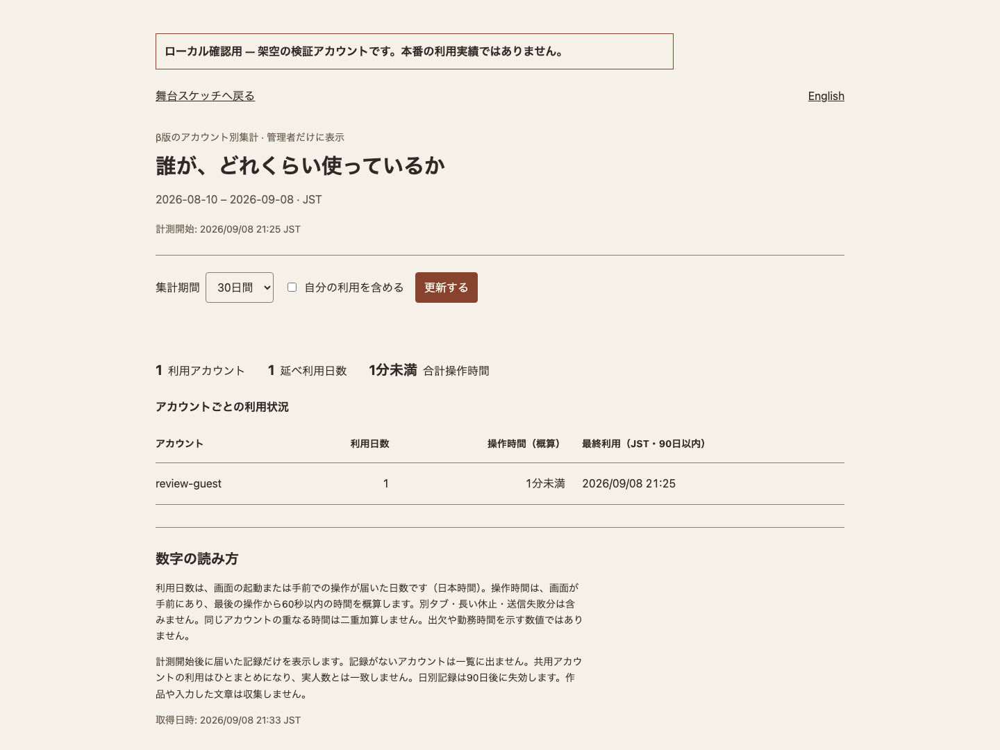

ユーザー別の利用状況を確認できます
実装・ローカル検証済み。本番への反映と実ユーザーの計測開始は未実施です。
本番へ反映する前に、管理画面と記録する項目を確認できます。画面の数字は架空アカウントによるローカル検証値で、本番の実績ではありません。
確認できること
| 項目 | 集計条件 |
|---|---|
| 最終利用日時 | 90日以内で、最後に起動・操作の報告が届いた日時 |
| 利用日数 | 直近7・30・90日、日本時間の日付で集計 |
| 操作時間 | 手前の画面で、最後の操作から60秒以内の時間を概算 |
管理者自身の利用は既定で除外し、チェックを付けると確認できます。作品や入力した文章は送信しません。利用者の画面下にも記録内容を表示します。
確認した範囲
- 全体テスト1609件成功。認証・日またぎ・重複送信・放置・通信停止などを検証。
- ローカルのCloudflare実行環境に実際に保存でき、管理者以外は集計を読めないことを確認。
- ブラウザでの操作時間が集計に届くこと、日英画面と期間切替を確認。
- 日英それぞれ390px・1440px幅の自動点検でNG・WARN・測定不可ともに0。見た目も確認。
- 公開体験版の配信物は変更なし。作業開始前の既存変更を保持。
未確認：Safari・実機iPad・本番Workerでの動作。記録がない人は一覧に出ず、共用アカウントの利用は区別できません。過去の未計測期間は復元できません。
本番へ反映すると
ログイン付きβ本体で計測が始まり、管理者は舞台画面下の「利用状況を見る」から一覧を開けます。日別データの保持期間は90日です。共有セッションとは別の保存領域を使います。
公開承認後に、既存の未公開変更が混ざらないよう反映対象を照合し、本番の認証・PWA更新・集計受信を確認します。
画面の見本

実装と検証の記録
仕様・API・再確認手順 ／ デザイントークン ／ 今回のコード差分
保存領域はCloudflareの公式仕様を確認して実装しました。